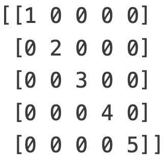

Prácticas 2
Práctica
Se dice que un año humano equivale a $7$ años caninos. Sin embargo, esta simple
conversión no reconoce que los perros alcanzan la edad adulta en aproximadamente dos años.
Como resultado, algunas personas creen que es mejor contar cada uno de los dos primeros años
humanos como $10.5$ años caninos y luego contar cada año humano adicional como $4$ años caninos.
Escribe un programa en Python que implemente la conversion descrita en el párrafo anterior.
Primero pregunte al usuario si este tiene o no como mascota un perro (por ejemplo
introduzca $1$ si sí y $2$ si no). Si el usuario ingresa $1$, pide que ingrese los
años humano que tiene su amigo perruno e imprima los correspondientes años caninos de su mascota,
en caso contrario manda un mensaje invitandolo a adoptar un perrito de la calle. Asegurate de que tu
programa funcione correctamente para conversiones de menos de dos años humanos y para conversiones de
dos o más años humanos.
Práctica
La siguiente fórmula se puede utilizar para determinar el día de la semana para el $1$
de enero en un año determinado:
$$ \mathrm{dia\_semana}= \left( \mathrm{año} + \left \lfloor \frac{\mathrm{año} - 1}{4} \right\rfloor - \left \lfloor \frac{\mathrm{año} - 1}{100} \right\rfloor + \left \lfloor \frac{\mathrm{año} - 1}{400} \right\rfloor \right)\% 7 $$
El resultado calculado por esta fórmula es un número entero que representa el día de la semana.
El domingo está representado por $0$. Los días restantes de la semana siguen en secuencia hasta
el sábado, que está representado por $6$.
La fórmula anterior para escribir un programa solicite al usuario un año e informe el día
de la semana para el $1$ de enero de ese año La salida del programa debe incluir el nombre
completo del día de la semana, no solo el número entero devuelto por la fórmula.
Práctica
En la libreria de la UMAR ofrecen descuentos a los clientes en Navidad, de
acuerdo con el monto de su compra. El criterio para establecer el descuento se
muestra abajo. Escribir un programa en Python que reciba
como dato el monto de la compra del cliente, obtenga el precio
real que debe pagar luego de aplicar el descuento correspondiente.
\begin{equation}
\begin{cases}
\text{Compra} < $50, & \text{ Descuento de } 0\%. \\
$50 \leq \text{Compra} < $100,& \text{ Decuento de } 2.5\%. \\
$100 \leq \text{Compra} < $500,& \text{ Descuento de } 5\%. \\
$500 \leq \text{Compra} & \text{ Descuento de } 10\%
\end{cases}
\end{equation}
Práctica
Escribir un programa en Python que solicite un número real al usuario
y determine si este es mayor que $10$, menor que $10$ o igual a $10$, segun lo que se cumpla:
imprima "Mayor que $10$", "Menor que $10$" o "Igual a $10$" respectivamente.
Práctica
Escribir un programa en Python que lea tres números reales, determine
el mayor, el menor de ellos y los imprima con un mensaje adecuado.
Práctica
Escribir un programa en Python que determine si un año es bisiesto. Imprima un mensaje
mensaje donde muestre el resultado.
Observación: Un año es bisiesto si es múltiplo de $4$ (por ejemplo $1984$). Sin embargo, los
años múltiplos de $100$ sólo son bisiestos cuando a la vez son múltiples de $400$, por ejemplo, $1800$
no es bisiesto, mientras que $2000$ sí lo es.
Práctica
Escribe un programa en Python que solicite al usuario ingresar un numero entero positivo.
Luego, utiliza un ciclo for para determinar e imprimir la suma de sus dígitos.
Por ejemplo, si el usuario ingresa $12345$ entonces debes imprimir $$1 + 2 + 3 + 4 + 5 = 15 $$
Práctica
Escribe un programa en Python que solicite al usuario un número entero positivo $n$
e imprima el número que se obtiene al invertir los dígitos de $n$.
Práctica
Un número entero positivo es capicúa si se lee igual de izquierda a derecha que
de derecha a izquierda. Por ejemplo, cada uno de los siguientes números de cinco dígitos,
son palíndromos: $12321$, $55555$, $45554$, y $11611$.
Escribir un programa en Python que solicite al usuario que ingrese un número entero positivo
y utiliza un ciclo for para determine si es o no un número capicúa.
Práctica
Escribir un programa en Python que solicite al usuario un número entero positivo dígitos.
Luego, utiliza un ciclo for para imprimir el número en notacion desarrollada i.e.
por ejemplo si el usuario ingresa $897$, entonces se debe imprimir la siguiente expresión:
$$\text{ 897=8 x 10^2 + 9 x 10^1 + 7 x 10^0}$$
Práctica
Si $h$ es la altura en metros y $w$ el peso en kilogramos de una persona,
se define el índice de masa corporal (IMC) como:
\begin{equation}\label{eqn:imc}
\text{IMC}:=\frac{w}{h^{2}}
\end{equation}
Escribe un programa en Python que solicite al usuario que ingrese su nombre, altura
(en metros) y peso (en kilogramos). Luego, utiliza la fórmula \eqref{eqn:imc} para calcular
el IMC del usuario.
Imprime un mensaje adecuado indicando el nombre del usuario y su IMC correspondiente:
'Hola Benito tu índice de masa corporal es: $22.2$'
Práctica
La panadería "El Bolillo feliz" tiene una oferta especial para aquellos que buscan aprovechar el
pan del día anterior. Cada pieza de pan fresco cuesta $\$3.125$ ajolopesos, pero el "pan atrasado"
tiene un descuento del $60\%$ sobre su precio original. Escribe un programa en Python que solicite
al usuario que ingrese la cantidad de piezas de pan fresco y el número de piezas de pan atrasado
que compró. Luego, calcula el precio total sin aplicar el descuento, el descuento aplicado y el total
a pagar con el descuento aplicado. Finalmente, presenta estos datos en una tabla ordenada, en donde
cada valor esté formateado a dos decimales. Por ejemplo si el usuario compro $5$ piezas de pan fresco
y $4$ piezas de pan atrasado imprime una tabla como la siguiente:
----------------------El Bolillo Feliz del H3---------------------
| Piezas de pan | Precio | Descuento | Total a pagar |
| 9 | 28.12 | 7.50 | 20.62 |
Práctica
Crea un programa en Python que imprima la tabla Pitagórica que muestra los productos de todas
las combinaciones de números enteros desde $1$ por $1$ hasta $10$ por $10$ inclusive. La tabla
Pitagórica debe incluir una fila de etiquetas en la parte superior. que contenga los números del
$1$ al $10$. También debe incluir etiquetas en el lado izquierdo que contengan los números del
$1$ al $10$. El resultado esperado del programa se muestra a continuación:
Práctica
Escribir un programa en Python que solicite al usuario un número entero
positivo $n$, e imprima una figura como la que se muestra a continuación: Por ejemplo
para $n = 6$
1
1 2
1 2 3
1 2 3 4
1 2 3 4 5
1 2 3 4 5 6
1 2 3 4 5
1 2 3 4
1 2 3
1 2
1
Práctica
Un número entero positivo $n$ es perfecto si la suma de todos sus
divisores positivos (excluido el mismo) es igual a $n$. El primer número perfecto
es $6$, ya que los divisores positivos de $6$ son $1, 2, 3$ y $1 + 2 + 3 = 6$.
Escribe un programa en Python que solicite al usuario un número entero positivo $n$
y determine e imprima si $n$ es un número perfecto.
Práctica
Escribe un programa en Python que encuentre los cinco primeros números perfectos.
Práctica
El zodíaco Chino asigna animales a los años en un ciclo de $12$ años. En la siguiente tabla
se muestra un ciclo de $12$ años. El patrón se repite a partir de ahí, siendo $2012$ otro
año del dragón y $1999$ otro año de la liebre.
Escriba un programa en Python que solicite al usuario un año y muestre el animal asociado
con ese año. El programa debe funcionar correctamente para cualquier año mayor o igual a
cero, no solo para los enumerados en la tabla.
Práctica
Escribe un programa en Python que implemente ciclos para encontrar e imprimir todos los números de
$2$ cifras tales que la suma de sus cifras es igual es un número impar.
Práctica
El INE desea construir un programa para contabilizar los votos. En la elección hay cinco candidatos, los cuales se representan con los valores comprendidos de $1$ a $5$.
Escribe un programa en Python que implemente el uso de listas para determinar el número que obtuvo cada candidato y el porcentaje que obtuvo respecto al total de los votantes.
El usuario ingresará los votos de manera desorganizada, tal y como se obtienen en la elección, el final de datos se representa por un cero, si por alguna razón el usuario ingresa un número distinto $0,1,2,3,4,5$ este se debe omitir.
Práctica
Escribe un programa en Python que implemente ciclos para encontrar e imprimir todos los números de
$4$ cifras tales que la suma de sus dígitos en las posiciones pares es igual a la suma de sus dígitos
en las posiciones impares.
Práctica
Conjetura de ULAM. Recibe su nombre en honor del matemático S. Ulam.
- Inicia con cualquier número entero positivo.
- Si el número es par, divídelo entre $2$. Si es impar, multiplícalo por $3$ y sumale $1$.
- Obtenga sucesivamente números enteros repitiendo el proceso. A esta sucesión se le
llama sucesión de Ulam.
Al final, obtendra el número $1$, independientemente del entero inicial.
Por ejemplo cuando el entero inicial es $26$ la sucesion de Ulam es:
$$26,13,40,20,10,5, 16,8,4,2,1$$
Escribir un programa en Python que solicite un número entero positivo $n$
(Validar entrada), e imprima la sucesión de ULAM correspondiente a $n$.
Práctica
Escribe un programa en Python que solicite al usuario que ingrese las coordenadas de dos puntos
distintos en el plano $A = (x_1,y_1)$ y $B = (x_2,y_2)$ (Solicita primero las coordenas del punto $A$,
y despues las coordenadas del punto $B$, estos deben ser leidos literal como coordenadas por ejemplo
$(1,5)$). Luego, determina e imprime la distancia entre $A$ y $B$.
Práctica
Escribe un programa en Python que solicite al usuario que ingrese las coordenadas de dos puntos
distintos en el plano $A = (x_1,y_1)$ y $B = (x_2,y_2)$ (Solicita primero las coordenas del punto $A$,
y despues las coordenadas del punto $B$, estos deben ser leidos literal como coordenadas por ejemplo
$(1,5)$). Luego, determina e imprime la pendiente de la recta que pasa
por los puntos $A$ y $B$.
Sugerencia: Si $A(x_1,y_1)$ y $B(x_2,y_2)$ son puntos en el plano. Se define la
pendiente de esta recta como:
\begin{equation}
m: =\begin{cases}
\displaystyle{\frac{y_{2}-y_{1}}{x_{2} -x_{1}}},& \text{ si } x_{1}\not= x_{2}\\
\infty,& \text{ si } x_{1}= x_{2}
\end{cases}
\end{equation}
Práctica
Escribe un programa en Python que solicite al usuario tres puntos
$A=(x_1,y_1), B=(x_2,y_2)$ y $C=(x_3,y_3)$ en el plano (primero pedir
las coordenas del punto $A$, luego las coordenadas del punto $B$, y
finalmente las coordenadas del punto $C$, estos deben ser leidos literal como coordenadas por ejemplo
$(1,5)$) y determina e imprime si los puntos son colineales.
Sugerencia: Tres puntos son colineales si se encuentran en la misma recta. Considera los
casos en los que los tres puntos o un par de puntos sean iguales imprime un mensaje apropiado
para esos casos.
Práctica
Escribir un programa en Python que reciba tres puntos en el plano:
$P_{1}(x_1,y_2), P_{2}(x_2,y_2)$ y $P_{3}(x_3,y_3)$ que corresponden
a los vértices de un triángulo, calcule su perímetro.
Sugerencia: Calcule la distancia entre cada par de puntos para conocer la longitud de
los lados del triángulo y utiliza la fórmula de Heron.
Práctica
Escribir un programa en Python que reciba tres puntos $A(x_1,y_1), B(x_2,y_2)$ y $C(x_3,y_3)$ ingresados
por el usario (Primero pedir las coordenas del punto $A$, luego las coordenadas del punto $B$, y finalmente las coordenadas
del punto $C$) y determine si los puntos con colineales.
Hint: Tres puntos son colineales si se encuentran en la misma recta. Considera los casos en los que los tres puntos o
un par de puntos sean iguales.
Práctica
Escribir un programa en Python que lea un número entero positivo $k$
(validar entrada) y encontre el número entero positivo $n$ más pequeño tal que
la suma de los $n$ primeros números naturales exceda el valor de $k$.
Práctica
El valor de $\pi$ se puede aproximar mediante la serie de Liebniz.
Consideremos la sucesión de número reales $\displaystyle{\left\{(-1)^{k}\frac{4}{2k+1}\right\}_{k=0}^{\infty}}$.
Para cada $n \in \mathbb{N}\cup \{0\}$, se define la $n$-ésima suma parcial de la sucesión como:
$$S_{n}:=\sum_{k=0}^{n} (-1)^{k}\frac{4}{2k+1} = \frac{4}{1} - \frac{4}{3} + \frac{4}{5} - \frac{4}{7} + \frac{4}{9}+ \cdots + (-1)^{n}\frac{4}{2n+1}$$
A la sucesión de sumas parciales $\{ S_{n}\}_{n=1}^{\infty}$ de la sucesión $\displaystyle{\left\{(-1)^{k}\frac{4}{2k+1}\right\}_{k=0}^{\infty}}$
se le llama Serie de Liebniz. Se puede demostrar que la serie de Liebniz es convergente y converge a $\pi$. Esto es,
$$\lim_{n \to \infty} S_{n}= \pi.$$
Denotamos esto de la siguiente manera: $$\sum_{k=0}^{\infty} (-1)^{k}\frac{4}{2k+1}= \pi$$
Escribir un programa en Python que solicite al usuario un número entero positivo $n$ (validar la entrada) y calcule e imprima la aproximación a $\pi$ dada por la $n$-ésima suma parcial $S_{n}$ de la serie de Liebniz.
Práctica
El valor de $\pi$ se puede aproximar mediante la serie de Nilakantha.
Consideremos la sucesión de números reales $\{x_{k}\}_{k=0}^{\infty}$ cuyos términos estan dados por:
\begin{align*}
x_{0}&:=3\\
x_{k}&:= (-1)^{k+1}\frac{4}{2k \cdot (2k+1) \cdot (2k+2)}, \, \, \, \, \text{ para } k\in \mathbb{N}
\end{align*}
Esto es, los primeros términos de la sucesión son:
$$3, \, \, \frac{4}{2\cdot 3\cdot 4},\, \, -\frac{4}{ 4\cdot 5\cdot 6},\, \,
\frac{4}{ 6\cdot 7 \cdot 8} ,\, \, -\frac{4}{ 8\cdot 9\cdot 10}, \ldots $$
Para cada $n \in \mathbb{N}$, se define la $n$-ésima suma parcial de la sucesión como:
$$S_{n}:=3 + \sum_{k=1}^{n} \frac{4}{2k \cdot (2k+1) \cdot (2k+2)} = 3 +
\frac{4}{2\cdot 3\cdot 4} - \frac{4}{ 4\cdot 5\cdot 6} +
\frac{4}{ 6\cdot 7 \cdot 8} - \frac{4}{ 8\cdot 9\cdot 10}+ \cdots $$
A la sucesión de sumas parciales $\{ S_{n}\}_{n=1}^{\infty}$ de la sucesión $\{x_{k}\}_{k=0}^{\infty}$ definida como antes se le llama Serie de Nilakantha . Se puede demostrar que la serie de Nilakantha es convergente y converge a $\pi$, i.e.
$$\displaystyle{\lim_{n \to \infty} S_{n}}= \pi.$$
Escribir un programa en Python que solicite al usuario un número entero positivo $n$ (validar la entrada) y calcule e imprima la aproximación a $\pi$ dada por la $n$-ésima suma parcial $S_{n}$ de la serie de Nilakantha.
Práctica
Sea $x \in \mathbb{R}$. Consideremos la sucesión de número reales
$\displaystyle{\left\{(-1)^{k}\frac{x^{2k+1}}{(2k+1)!}\right\}_{k=0}^{\infty}}$.
Para cada $n \in \mathbb{N}$, se define la $n$-ésima suma parcial de la sucesión
como:
$$S_{n}:=\sum_{k=0}^{n} (-1)^{k} \frac{x^{2k+1}}{(2k+1)!} = x - \frac{x^{3}}{3!} +
\frac{x^{5}}{5!}+ \cdots + (-1)^{n} \frac{x^{2n+1}}{(2n+1)!}$$
La sucesión de sumas parciales $\{ S_{n}\}_{n=1}^{\infty}$ de la sucesión
$\displaystyle{\left\{(-1)^{k}\frac{x^{2k+1}}{(2k+1)!}\right\}_{k=0}^{\infty}}$
es la serie de Taylor de la función $\mathrm{Sen}(x)$. Se puede demostrar
que esta serie es convergente y converge a $\mathrm{Sen}(x)$.
Escribir un programa en Python que solicite al usuario un número
real $x$, un número entero positivo $n$ (validar la entrada) y calcule e imprima la $n$-ésima
suma parcial $S_{n}$ de la serie de Taylor de la función $\mathrm{Sen}(x)$.
Práctica
El matemático italiano Leonardo Fibonacci propuso el siguiente problema.
Supongamos que un par de conejos tiene un par de crías cada mes y cada nueva pareja se hace
fértil a la edad de un mes. Si se dispone de una pareja fértil y ninguno de
los conejos muere (vida infinita para los conejos). ¿Cuantos conejos se tienen transcurrido
un determinado número de meses? Este problema genera la conocida sucesion de Fibonacci:
$$1,1,2,3,5,8,13,21,34,55,89,\ldots$$
Observemos que la sucesión comienza con los números $1$ y $1$. Luego a partir de estos,
cada término es la suma de los dos anteriores.
- Escribir un programa en Python que solicite al usuario un número entero
positivo $k$, e imprima los primeros $k$ terminos de la sucesion de Fibonacci.
- Escribir un programa en Python que solicite al usuario un número entero
positivo $n$, determine e imprima ¿cuántas parejas de conejos habrá después de $n$ años?
- Escribir un programa en Python que solicite al usuario un número entero
positivo par $m$ (validar entrada), determine e imprima el número de meses necesarios
para producir $m$ parejas de conejos.
Práctica
Un triangulo rectángulo puede tener lados que sean todos enteros. El conjunto de tres valores enteros
para los lados de un triángulo rectángulo se conoce como una terna pitagórica. Estos tres lados
deben satisfacer la relación de que la suma de los cuadrados de dos lados es igual al cuadrado de la
hipotenusa.
Escribir un programa en Python que encuentre e imprima todas las ternas de Pitágoras
para el cateto opuesto, cateto adyacente e hipotenusa, todos ellos no mayores de 500.
Práctica
Escribir un programa en Python que solicite al usuario un número entero
positivo impar $n$ (validar entrada) e imprima una figura como la que se muestra a continuación.
Observación: $n$ es la longitud de las diagonales del rombo
Por ejemplo si $n=9$:
*
* * *
* * * * *
* * * * * * *
* * * * * * * * *
* * * * * * *
* * * * *
* * *
*
Práctica
Escribir un programa en Python que solicite al usuario un número entero
positivo $n$, e imprima una figura como la que se muestra a continuación: por ejemplo
para $n = 7$
1 2 3 4 5 6 7 7 6 5 4 3 2 1
1 2 3 4 5 6 6 5 4 3 2 1
1 2 3 4 5 5 4 3 2 1
1 2 3 4 4 3 2 1
1 2 3 3 2 1
1 2 2 1
1 1
Práctica
Escribe un programa en Python que solicite al usuario un número entero positivo $N$ menor
o igual que $10^{5}$ (validar entrada) y encuentre e imprima el número entero positivo
más pequeño $M$ tal que el producto de sus dígitos sea igual a $N$.
Por ejemplo si $N=10$, entonces el programa debería imprimir $25$ pues $25$ es
el número entero positivo más pequeño tal que $2\times 5=10$.
Práctica
Para encontrar el Máximo Común Divisor (MCD) de
dos números se puede implementar el algoritmo de Euclides:
Dados $a,b \in \mathbb{N}$
con $a>b$ (si $a=b$, entonces $\mathrm{MCD}(a,b)=a$), se
divide $a$ entre $b$, obteniendo el cociente $q_{1}$ y el resto
$r_{1}$. Si $r_{1} \not= 0$
se divide $r_{1}$ entre $b$, obteniendo el
cociente $q_{2}$ y el resto $r_{2}$.
Si $r_{2} \not= 0$, se divide $r_{1} $ entre $r_{2}$,
para obtener $q_{3}$ y $r_{3}$, y así sucesivamente.
Se continúa el proceso hasta que se obtiene un resto igual a $0$.
El resto anterior a cero es entonces
el Máximo Común Divisor de los números $a$ y $b$.
Se denota el Máximo Común Divisor de $a$ y $b$ por $\mathrm{MCD}(a,b)$
Escriba un algoritmo que lea dos números enteros positivos $a$ y $b$ (validar entradas),
e implemente el algoritmo de Euclides para encontrar el Máximo Común Divisor de $a$ y $b$.
Imprima el resultado.
Práctica
Escribir un programa en Python que encuentre e imprima todos los números de $4$ cifras
que cumplen la condición de que la suma de las cifras de
las posiciones impares es igual a la suma de las cifras de en las posiciones
pares.
Práctica
Crea un programa en Python que dado un diccionario imprima (mediante un mensaje adecuado)
el primer valor más largo del diccionario. Por ejemplo, el siguiente diccionario es:
frutas = {'fruta': 'manzana', 'color': 'verde'}
Se debe imprimir manzana pues es el primer valor más largo.
Práctica
Crea un programa en Python que tome una lista de cadenas de números como argumento,
la convierte en números enteros y calcule e imprima la suma de la lista. Por ejemplo, si la
lista de cadenas de números es: ['1', '3', '5'] debe convertirse en
[1, 3, 5] y e imprimir (mediante un mensaje adecuado) a 9.
Práctica
Crea un programa en Python tome una lista de cadenas verifique si la lista tiene cualquier duplicado.
Si hay duplicados, se deben imprimir los duplicados. Si no hay duplicados, se debe imprimir
"Sin duplicados". Por ejemplo, si la lista es frutas como a continuación
debería devolver manzana y la lista de nombres debería devolver
"Sin duplicados".
frutas = ['manzana', 'naranja', 'plátano', 'manzana']
nombres = ['Daniela', 'Nayeli', 'Sarah', 'Jasubilene', 'Itiel', 'Yamil', 'Nestor', 'Orlando']
Práctica
Crea un programa en Python que tomé un el diccionario registro y verifique cuántos de
los estudiantes si asistieron a la escuela. En el diccionario registro las claves
corresponden a las matriculas de los estudiantes y el valor correspondientes es
'Si' o 'No'. Si el alumno fue a la escuela, el diccionario dice 'Si'.
Si el alumno no asistió a la escuela, el diccionario dice 'No'. El programa debe imprimir el número
de estudiantes que asistieron a la escuela. Por ejemplo, utilizando el siguiente diccionariose debe imprimir
3 (Utiliza un mensaje adecuado).
registro = {'2023260134':'Si','2023260135': 'No', '2023260136':'Si', '2023260137': 'No', '2023260138':'Si', '2023260139':'Si', '2023260140':'Si', '2023260141':'No', '2023260142':'No'}
Práctica
Crea un programa en Python que dada una lista de cadenas, imprima el índice de la primera palabra más larga de la lista.
Por ejemplo, si la lista es:
palabras1 = ["Odio", "Remordimiento", "Venganza"]
se debe imprimir 2. Mientras que si la lista es:
palabras2 = ["Amor", "Odio"]
se debe imprimir 0.
Práctica
El departamento de servicios escolares de la Universidad del Mar Campus Huatulco sabe que eres
un excelente programador y solicita de tu apoyo para saber cuántos estudiantes, mujeres y hombres,
están matriculados en la universidad. Servicios Escolares ha guardado el sexo de cada uno de los
estudiantes en una lista. Crea un programa en Python que determine cuántos hombres y cuantas
mujeres hay en la lista, almacena esta información en un diccionario. Por ejemplo si la lista es:
estudiantes = ['Hombre', 'Mujer', 'mujer', 'hombre', 'hombre', 'hombre', 'mujer', 'hombre', 'Mujer', 'Hombre', 'Mujer', 'Hombre' , 'mujer']
Se debe imprimir el siguiente diccionario:
{'Hombres':7 'Mujeres':6}
Observación: A veces se guardo 'mujer' o 'Mujer' o bien 'Hombre' o 'hombre'
Práctica
Crea un programa en Python que dada una lista de nombres guarde en un diccionario los nombres
que comienzan con "S" (claves) y la cantidad de veces que este aparece en la lista
(valores). Por ejemplo si la lista es:
nombres = ["Sofia","Saul", "Jorge", "Samantha","Jonathan", "Sofia", "Juan", "Joaquin", "Diana", "Daniela", "Sarah", "Sofia", , "Samantha"]
Se debe imprimir el siguiente diccionario: {“Sofia”: 3, “Saul”: 1, , "Sarah": 1, "Samantha": 1}
Práctica
Crea un programa en Python dada una lista de números enteros, determina e imprima la diferencia
entre el número par más grande de la lista y el número impar más pequeño de la lista. Por ejemplo,
si la lista es: [1,2,4,6] se debe imprimir 6 -1= 5
Práctica
Crea un programa en Python que solicite al usuario un número entero positivo $n$ e imprima
una lista de todos los números primos menores o iguales que $n$. Por ejemplo, si el usuario
ingresa 10, se debe imprimir la lista [2, 3, 5, 7].
Práctica
Cree un programa en Python que solicite al usuario que ingrese una cadena de números y
determine e imprima el digito impar más grande de la cadena. Por ejemplo, si el usuario
ingresa '23569', la función debe imprimir 9.
Práctica
Crea un programa en Python que dada una lista de números. Si la lista tiene ceros (0),
se deben mover estos al final de la lista y manteniendo el orden de los demás números de la lista.
Si no hay ceros en la lista, ordenar la lista original en orden ascendente. En ambos casos imprimir
la lista resultante. Por ejemplo, si la lista es [1, 4, 6, 0, 7,0,9] es se debe imprimir
[1,4, 6, 7, 9, 0, 0]. Mientras que, si la lista es [2, 1, 4, 7, 6] entonces se debe imprimir
[1, 2, 4, 6, 7].
Práctica
Escribe un programa en Python que lea una línea de texto y determine e imprima el número de
ocurrencias de cada palabra en la cadena. También imprime el número total de palabras únicas
Sugerencia: Usa el método Split
Práctica
La distancia de Levenshtein (o distancia de edición) es el número mínimo de operaciones
requeridas para transformar una cadena de caracteres en otra.
Se entiende por operación, bien una inserción, eliminación o la sustitución de un carácter.
Escribe una función recursiva en Python que reciba como parámetros dos cadenas de caracteres y devuelva
la distancia de Levenshtein entre ambas cadenas de texto
Práctica
Crea un módulo en Python llamado area.py que contenga métodos para calcular el área de las siguientes
figuras geométricas círculo, rectángulo, triángulo y poligono regular de $n$ lados.
En el caso del círculo debes pedir el radio, mientras que en el caso del rectángulo
la base y la altura del mismo, para e triángulo debes primer preguntar al usuario con que información
cuenta del triangulo: 1) las longitudes de cada uno de sus lados, 2) la base y la altura y finalmente
para el póligono regular, debes preguntar el número de lados del poligono regular y la longitud de cada
uno de sus lados y la longitud de su apotema.
Práctica
Crea un módulo en Python llamado miestadistica.py que contenga métodos para realizar cálculos estadísticos
básicos, como calcular el promedio, la mediana, la desviación estándar y la moda de un conjunto de una lista
de datos numéricos.
Práctica
Crea un módulo en Python llamado fraccion.py, el módulo debe tener las siguientes caracteristicas:
- Una clase llamada
Fraccion en la cual el constructor de la clase debe recibir el numerador y el
denominador para definr una fracción, utiliza decoradores para validar que el denominador
sea distinto de cero. Luego, utiliza metodos especiales para representar a los objetos instanciados
de la clase Fracción como $a/b$.
- El módulo debe tener un método que se llame
simplificar, este método debe recibir una fracción
(un objeto de la clase fracción) e imprimir la fracción simplificada.
- En el módulo, crear un método llamado sumar que reciba como argumento dos fracciones
(dos objetos de la clase Fracción) e imprima la fracción resultando de la suma pero simplificada.
- En el módulo, crear un método llamado
restar que reciba como argumento dos fracciones
(dos objetos de la clase Fracción) e imprima la fracción resultante de la resta pero simplificada.
- En el módulo, crear un método llamado
producto que reciba como argumento dos fracciones
(dos objetos de la clase Fracción) e imprima la fracción resultante del producto pero simplificada.
- En el módulo, crear un método llamado
division que reciba como argumento dos fracciones
(dos objetos de la clase Fracción) e imprima la fracción resultate de la división pero simplificada.
- En el módulo, crear un método llamado
adecimal que reciba como argumento un fracción
(un objeto de la clase Fracción) e imprima la expresion decimal de la fracción.
Práctica
El algoritmo de Luhn, también conocido como algoritmo de módulo 10, es un método comúnmente utilizado
para validar números de tarjetas de crédito y débito, así como también números de seguridad social y otros
identificadores numérico. El algoritmo de Luhn consiste en los siguientes pasos:
- Invertir el número,
- Multiplicar por $2$ los dígitos en posiciones impares,
- Multiplicar los dígitos impare por $2$: Si después de multiplicación un dígito en posición
impar el resultado es mayor que $9$, restarle resta 9 al resultado. Esto asegura que todos
los dígitos resultantes sean menores o iguales a 9.
- Sumar todos los díggitos del número.
- Verificar si la suma es divisible por $10$: Si el resultado de la suma es divisible por 10, entonces
el número es válido según el algoritmo de Luhn.
Crea un módulo en Python llamada validacion_tarjeta.py que tenga un método llamado
algoritmo_luhn que reciba como parámetro una cadena de números, la función debe validar
si en efecto la cadena ingresa representa un número entero positivo y debe devolver
True si el número ingresado es válido según el Algoritmo de Luhn y
False en caso contrario.
Práctica
Crea un módulo en Python llamado distancia_puntos que incluya métodos para calcular la
distancia entre dos puntos en el plano cartesiano utilizando diferentes distancias:
- Distancia Euclidiana:
\[
D_{\text{Euclidiana}}((x_1, y_1), (x_2, y_2)) = \sqrt{(x_2 - x_1)^2 + (y_2 - y_1)^2}
\]
- Distancia del taxista ( o de Manhattan):
\[
D_{\text{Manhattan}}((x_1, y_1), (x_2, y_2)) = |x_2 - x_1| + |y_2 - y_1|
\]
Distancia de Minkowski: La distancia de Minkowski generaliza tanto la distancia
Euclidiana como la del taxista como casos especiales. Cuando $p=2$, se reduce a la distancia
Euclidiana, y cuando $p=1$ se reduce a la distancia del Taxista.
\[
D_{\text{Minkowski}}((x_1, y_1), (x_2, y_2)) = \left( |x_2 - x_1|^p + |y_2 - y_1|^p \right)^{\frac{1}{p}}
\]
- Distancia de Chebyshev:
\[
D_{\text{Chebyshev}}((x_1, y_1), (x_2, y_2)) = \max(|x_2 - x_1|, |y_2 - y_1|)
\]
- Distancia de Canberra:
\[
D_{\text{Canberra}}((x_1, y_1), (x_2, y_2)) = \sum_{i=1}^{2} \frac{|x_i - y_i|}{|x_i| + |y_i|}
\]
Práctica
Escribe una función en Python que implemente el Método babilonico utilizando ndarrays para
aproximar la raiz cuadrada de un número entero positivo. La función debe recibir cuatro argumentos:
a0,numero,iteraciones y epsilon pero sólo el parametro numero
debe ser obligatorio (y debe ser un número entero positivo) los otros deben tener los siguientes
valores predeterminados: a0=1, iteraciones=10 y
epsilon=0.00005. El parámetro a0 es una aproximación inicial distinta de cero
a la raiz cuadrada de numero, iteraciones es el número de iteraciones a realizar
y epsilon el error relativo entre dos términos consecutivos. La función debe devolver la aproximación a la
raiz cuadrada de número cuando se cumpla que el número de iteraciones sea igual a iteraciones
o bien cuando la diferencia entre dos aproximaciones consecutivas sea menor que el valor de
epsilon y una tabla como la que se aprecia enseguida:

Práctica
Un jugador de apuestas juega contra la banca partidas sucesivas e independientes. En cada partida,
la probabilidad de ganar es igual a la de perder: $p=\frac{1}{2}$. Si el jugador pierde, entrega
un ajolopeso a la banca, y si gana recibe la misma cantidad. La fortuna del jugador depende por
lo tanto del al azar, de acuerdo con los resultados de las distintas partidas. El jugador tiene
previsto retirarse tanto si llega a ganar $6$ ajolopesos como si llega a perder $4$
ajolopesos.
Escribe un programa en Python que realice $1000000$ de simulaciones de este experimento y en base a
los resultados estima la probabilidad de alcanzar esos $6$ ajolopesos de beneficio.
Práctica
Escriba un programa en Python donde utilices Numpy para crear un
vector de números enteros del 30 al 70.
Práctica
Escriba un programa en Python donde utilices Numpy para crear un
vector de todos los números pares del 30 al 70.
Práctica
Escribe un programa en Python donde utlices NumPy para crear una matriz
$3 \times 4$ con los valores del 10 al 21.
Hint: Utiliza el metodo array.reshape().
Práctica
Escribe un programa en Python donde se utilice NumPy para crear un
arreglo de $10\times 10$, en la que los elementos en los extremos
sean iguales a $1$ y 0 en cualquier otro caso, i.e. para
$0< i , j < 9$ las entradas $i,j$ de la matrix son iguales a cero
y $1$ en cualquier otro caso.
Práctica
Escribe un programa en Python donde se utilice Numpy para crear un arreglo
de tamaño $5\times 5$ con elementos en la diagonal principal iguales
a $1, 2, 3, 4, 5$ .

Práctica
Escribe un programa en Python donde utilices NumPy para crear un vector con valores de 0 a 11
y cambia el signo de los números en el rango de 3 a 7 (incluyendo estos).
Práctica
Escribe un programa en Python donde utilices NumPy para crear una matriz de
tamaño $4\times 4$ en la que $0$ y $1$ se encuentren escalonados.
Práctica
Escribe un programa en Python donde utilices NumPy para guardar una matriz
determinada en un archivo de texto y luego leerla e imprimirla desde el archivo.
Sugerencia: Utiliza las funciones numpy.savetxt y numpy.loadtxt
Práctica
Escribe un función en Python que utilice NumPy para intercambiar dos filas o columnas de una matriz.
La función debe tener los siguientes argumentos: arreglo2d, intercambiar,i,j,
donde arreglo2d es una matriz de números reales, intercambiar es
un valor booleano: $0$ para intercambiar filas o $1$ para intercambiar columnas
(con valor predeterminado igual a $0$). Los parámetros $i$ y $j$ indican las filas o
columnas a intercambiar, para estos parámetros verificar que en efecto sean valores
válidos i.e. si se desean cambiar filar que estos sean no negativos y no sean mayores
que el número de filas $-1$.
Práctica
Escribe un función en Python que utilice NumPy para para invertir el orden de los elementos de una matriz
la función debe recibir una matriz y devolver una matrix cuyo primer elemento se
sea último de la matriz original
Observación: No utilice la función numpy.flip()
Práctica
Escribe una función en Python que reciba dos vectores: vector1,vector2
y que utilice NumPy para probar si cada elemento de vector1 es un elemento
de vector2, la función debe devolver un vector con entradas
Verdadero, Falso según sea el caso para cada elemento. Por ejemplo, si el
vector1 es: [0 1 2 3 4] y el vector2 es: [0, 2]
entonces la función debe devolver: [ True False True False False]
Práctica
Escribe una función en Python que reciba dos matrices: matriz1,matriz2
y que utilice NumPy para determinar todos los elementos en comun entre las dos matrices.
La función debe devolver un vector con los elementos en común.
Observación: Resuelve el problema sin utilizar numpy.intersect1d
Práctica
Escribe una función en Python que reciba una matriz y utilice NumPy para encontrar todos
los elementos únicos (aquellos que sólo se encuentran una vez en la matriz) de la matriz.
La función debe devolver un vector con los elementos en únicos de la matriz.
Observación: Resuelve el problema sin utilizar numpy.intersect1d
Práctica
Escribe una función en Python que reciba una matriz y un número de punto flotante,
que utilice Numpy para determinar el valor de la matriz más cercano al número dado. La función debe
debe devolver tal valor.
Práctica
Escribe una función en Python que utilice NumPy para ordenar una matriz respecto a una fila,columna
específica. La función debe recibir los siguientes argumentos: matriz, ordenar,
i donde matriz es un arreglo 2-dimensiobal de números reales, ordenar
es un valor booleano: $0$ para filas o $1$ para columnas (con valor predeterminado igual a $1$) y el
parámetro $i$ indica la columna o fila con respecto a la cual se debe ordenar la matriz, para este parámetro
verificar que en efecto sean valores válidos i.e. si se desea ordenar respecto a una columna especifica
verificar que no sea negativo y no sean mayores que el número de columnas $-1$.
Práctica
Definición: Los puntos de silla de una matriz son aquellos elementos de la matriz
que cumplen que son menores o iguales que el resto de elementos de su fila y mayores o iguales que el resto
de elementos de su columna, o al revés, mayores o iguales que el resto de elementos de su fila
y menores o iguales que el resto de elementos de su columna.
Escribir un programa en Python donde utilice Numpy para generar una matriz cuadrada de tamaño $10 \times 10$
con números
aleatorios entre $0$ y $9$, bajo el siguiente criterio: Las entradas de la matriz se llenarán con números
de acuerdo a la posición en la que se encuentren: en la entrada $i,j$ de la matriz se debe colocar un
número impar $(1,3,5,\ldots,9)$ si $i+j$ es un número impar mientras que se debe colocar un número par
$(0,2,4,\ldots,8)$ si la suma $i+j$ resulta ser un número par. Luego, imprimir la matriz obtenida y
realizar lo siguiente:
- Crear un vector que almacene el máximo elemento de cada columna de la matriz e imprimir
la posicion en la que se encuentre e imprimir el vector.
- Crear un vector que almacene el máximo elemento de cada fila de la matriz e imprimir
la posicion en la que se encuentre e imprimir el vector.
- Imprimir el valor máximo almacenado en toda la matriz e imprimir todas las posiciones en las que se
encuentra este valor.
- Finalmente, encuentre e imprima todos los puntos sillas de la matriz.
Sugerencia: Utiliza el metodo numpy.random.randint()
Práctica
Escribe un programa en Python que genere de forma aleatoria las temperaturas promedio mínimas
y máximas mensuales durante un año particular, estas tiene que ser tomadas de manera uniforme
entre 20 C y 40 y además para cada mes la temperatura mínima debe ser menor o igual que la
temperatura maxima correspondiente.Almacenar estas en un arreglo. Luego utilizando matplotlib.pytplot
realiza la gráfica de estas temperaturas promedio mensual, graficar las
correspondientes a las temperaturas mínimas y las temperaturas máximas.
Práctica
Crear una clase `vector` con atributos y métodos similares a los de la clase punto creadas en una clase previa. Crear un método llamado `dibujar` en el cual utilices la librería matplotlib para representar gráficamente el vector en el plano, como se aprecia en el siguiente gráfico:
Práctica
Escribe un programa en Python que implemente la clase vector creada en la Práctica 12.2 que solicite al usuario las coordenadas de dos vectores y represente geométricamente a cada uno de los vectores en un mismo plano cartesiano. Así, como el vector que resulta de sumar ambos vectores, intenta representar geometricamente la regla del paralelograma para la suma de vectores.
Práctica
Práctica